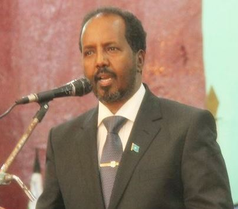
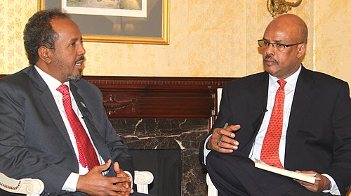

Xasan Sheekh Maxamuud; Dhashay 29 Noofambar 1955) [1] waa siyaasi Soomaaliyeed oo u shaqaynayey 022. [2] Waa aasaasihii iyo guddoomiyaha xisbiga Midowga Nabadda iyo Horumarka . Waxaa loo doortay Madaxweynaha Jamhuuriyadda Federaalka Soomaaliya 15-kii May 2022, isagoo ka guuleystay Madaxweynaha hadda talada haya ee Maxamed Cabdullaahi Maxamed . Waxa uu horay ula soo shaqeeyay Madaxweynihii 8-aad ee Soomaaliya 2012 ilaa 2017. Waxa uu ahaa nin u dhaqdhaqaaqa xuquuqda madaniga iyo siyaasadda, Xasan waxa uu hore u ahaa bare jaamacadeed iyo hormuud .
Bishii Abriil 2013, Xasan waxa loo magacaabay Time 100, oo ah majaladda Time liiska sannadlaha ah ee 100ka qof ee ugu saamaynta badan adduunka. Dadaalkiisa ku aaddan horumarinta dib-u-heshiisiinta qaranka, tallaabooyinka la-dagaallanka musuqmaasuqa, dib-u-habaynta dhaqan-dhaqaale iyo amniga ee Soomaaliya ayaa lagu sheegay sababaha loo soo xulay [4] Waxa uu ku dhashay Jalalaqsi, oo ah magaalo beeralay ah oo ku taal bartamaha Hiiraan ee maanta Soomaaliya, xilligii wakiilnimada, [5] [6] oo ka soo jeeda dabaqad dhexe. [7] Xasan waxa uu qabaa Qamar Cali Cumar waxa ayna u leedahay todoba caruur ah. [8]

Xasan waxa uu dugsigii hoose dhexe iyo sare ku qaatay magaaladii uu ku dhashay ee Jalalaqsi . [9] Ka dib waxa uu u soo wareegay caasimadda Soomaaliya ee Muqdisho 1978-kii, halkaas oo uu muddo saddex sano ah wax ka baranayey Jaamacaddii Ummadda Soomaaliyeed ee deegaanka. Sannadkii 1981-kii, waxa uu machad ka qaatay shahaadada koowaad ee jaamacadda ee tignoolajiyada .
Sannadkii 1986-kii, Xasan waxa uu u socdaalay dalka Hindiya oo uu bilaabay in uu dhigto Jaamacadda Bhopal (hadda Barkatullah University). Halkaas oo uu 1988-kii ku qaatay shahaadada mastarka ee waxbarashada farsamada. [12] Xasan sidoo kale waa ka qalin jabiyay Machadka Dhisidda Nabadda xagaaga ee Jaamacadda Bariga Mennonite ee fadhigeedu yahay Harrisonburg, Virginia . Sannadkii 2001, waxa uu dhammaystay saddex ka mid ah koorasyada degdegga ah ee SPI, isaga oo baranaya dhexdhexaadinta, bogsiinta dhaawacyada, iyo naqshadaynta tababarro udub dhexaad u ah ardayda. [13]
Isaga oo ku jira karti-xirfadeed, Xasan waxa uu ka aqbalay jagada macalinimo iyo tabobar ee dugsiga sare ee farsamada ee Lafoole. [14] Ka dib waxa uu ku biiray Kulliyada Tababarka Farsamada ee Macalimiinta Jaamacadda Ummadda Soomaaliyeed ee ku xidhanayd 1984kii. [14] [15] 1986kii waxa uu noqday madaxa waaxda. [14]
Markii dagaalkii sokeeye uu qarxay horraantii 1990-meeyadii, Xasan wuxuu ku sugnaa Soomaaliya wuxuuna la taliye ka ahaa NGO-yo kala duwan, xafiisyada UN -ka, iyo mashaariicda nabadda iyo horumarinta. [16] Waxa uu sarkaal dhanka waxbarashada ah uga soo shaqeeyay hay’adda UNICEF ee bartamaha iyo koonfurta dalka intii u dhaxeysay 1993-kii ilaa 1995-kii. Sannadkii 1999-kii, waxa uu sidoo kale ka wada-shaqeeyay aas-aaskii Machadka Maamulka iyo Maareynta Soomaaliyeed (SIMAD) ee caasimadda. Machadku wuxuu ka dib koray Jaamacadda SIMAD, iyadoo Xasan uu ahaa hormuudka ilaa 2010. [17]
Xasan waxa uu siyaasadda Soomaaliya ku soo biiray sannadkii xigay, markii uu aasaasay Xisbiga Nabadda iyo Horumarka (PDP). [18] Xubnaha PDP waxay si wada jir ah ugu doorteen inuu noqdo guddoomiyaha xisbiga Abriil 2011, isaga oo loo igmaday inuu sii ahaado hoggaanka saddexda sano ee soo socota. [19]
Bishii Agoosto 2012, Xasan ayaa loo doortay Xildhibaan (Xildhibaan) ka tirsan Baarlamaanka Federaalka Soomaaliya ee dhawaan la dhisay. [20] Ka sokow shaqada tacliinta iyo madaniga, sidoo kale waa ganacsade guul leh. [21]
10kii Sebtembar 2012, sharci-dajiyayaashu waxay doorteen Xasan Madaxweyne Soomaaliya intii lagu jiray doorashadii madaxtinimo ee dalka ka dhacday 2012 . [22] Xildhibaanada ayaa warqadahooda ku calaamadeeyay daah ka hor inta aysan ku ridin sanduuq cad oo ay ku hor-jeedaan ergooyinka ajnabiga ah iyo boqolaal Soomaali ah oo isugu jira rag iyo dumar iyadoo sidoo kale si toos ah looga daawanayay taleefishinada. Wareegii koowaad ee doorashada kadib ayaa waxaa ku soo baxay musharaxiinta ugu cadcad Madaxweynihii hore ee Soomaaliya Shariif Sheekh Axmed oo helay 64 cod. Xasan ayaa kusoo xigay codad gaaraya 60-cod, waxaana kaalinta 3-aad galay ra’iisul wasaare C/weli Maxamed Cali oo helay 32 cod. [23] C/qaadir Cosoble oo kaalinta afaraad galay, Cali ayaa markii dambe doortay inuu ka haro wareegga labaad. [23] Labada musharax oo ay wehliyaan rajada kale ee ku loolamayay jagadaasi, ayaa la sheegay inay taageerayaashooda ku wargeliyeen inay taageeraan musharaxnimada Xasan. [24] Xasan ayaa wareegii ugu dambeeyay ku soo baxay guul la yaab leh, wuxuuna kaga guuleystay Axmed 71–29% (190 cod vs 79 cod). [25]
Isla markii la akhriyey natiijadii ugu dambaysay ee codbixinta, Xasan ayaa loo dhaariyey xafiiska. [26] Xildhibaanada ayaa bilaabay in ay qaadaan heesta calanka Soomaaliya, sidoo kale shacabka Muqdisho ayaa muujiyay sida ay ugu faraxsan yihiin natiijada ka soo baxday, iyagoo u arkayay in ay tahay xilli isbedel ah. [27]
Madaxweyne Xasan oo khudbad ka jeediyay soo dhaweyntiisa, ayaa u mahadceliyay guud ahaan shacabka Soomaaliyeed, baarlamaanka federaalka iyo sidoo kale xubnihii kale ee la tartamay. Sidoo kale, wuxuu sheegay inay taageerayaan dadaallada dib u dhiska dalka Soomaaliya ka socda ee colaadaha ka dambeeya, wuxuuna tilmaamay inuu diyaar u yahay inuu si dhow ula shaqeeyo beesha caalamka. [28]
Sidoo kale, Sheekh Shariif ayaa ugu hambalyeeyay Xasan guusha uu gaaray, wuxuuna ballan-qaaday inuu la shaqeyn doono madaxda cusub ee dowladda. [29] Ra’iisul Wasaare Cali ayaa ku tilmaamay in doorashadan ay tahay mid bilow u ah siyaasadda Soomaaliya. [30] C/raxmaan Maxamuud Faroole, Madaxweynaha maamul-goboleedka Puntland ee Waqooyi Bari Soomaaliya, ayaa sidoo kale u mahad-celiyay Xasan, shacabka Soomaaliyeed iyo dhammaan intii ay khusaysay geeddi-socodkii siyaasadeed ee Roadmap-ka, kaasoo ugu dambayntii horseeday in la qabto doorashada madaxweynaha, lagana baxo KMG-nimada. muddo. [29]

Magacaabista Xasan waa laga soo dhaweeyay dhammaan caalamka. Ergeyga Gaarka ah ee Qaramada Midoobay u qaabilsan Soomaaliya Augustine Mahiga ayaa bayaan uu soo saaray ku tilmaamay doorashada “tallaabo weyn oo hore loogu qaaday waddada nabadda iyo barwaaqada[. . . ] Soomaaliya waxay cadaysay kuwa shakiyey inay khaldan yihiin waxayna farriin xooggan oo horumar ah u dirtay Afrika oo dhan iyo runtii adduunka oo dhan." Sidoo kale, guddiga Midowga Afrika ee Soomaaliya ayaa bogaadiyay doorashadan, waxayna ballan-qaadeen inay taageerayaan hoggaanka cusub. [31] Ra'iisul wasaaraha Britain David Cameron iyo madaxa siyaasadda arrimaha dibadda ee Midowga Yurub Catherine Ashton ayaa iyaguna hambalyo u diray, iyagoo ku celceliyay dareenka guud ee ah in doorashadu ay ka dhigan tahay guul la taaban karo. [32] Dowladda Mareykanka ayaa dhankeeda war saxaafadeed ay soo saartay waxay ugu hambalyeysay Xasan, taasoo ay ku tilmaantay inay tahay tallaabo muhiim ah oo u soo hoyatay shacabka Soomaaliyeed, iyo horumar muhiim ah oo loo qaaday dhismaha dowlad matasha. Sidoo kale waxaa ay ku boorisay madaxda Soomaaliya in ay sii xoojiyaan howshan, waxaana ay ballan qaaday in ay sii wadayaan la shaqeynta dowladda Soomaaliya. [33] Sidoo kale, Madaxweyne Sheikh Khalifa bin Zayed Al Nahyan ee dalka Isutagga Imaaraadka Carabta ayaa dhambaal hambalyo ah u diray madaxa cusub ee Soomaaliya, sidoo kale Madaxweyne ku xigeenka iyo Ra’iisul Wasaaraha Imaaraadka Sheikh Mohammed bin Rashid Al Maktoum ayaa sidoo kale dhambaal hambalyo ah u diray madaxweynaha cusub ee Soomaaliya. Amiirka Abu Dhabi Sheikh Mohammed bin Zayed Al Nahyan . [34] Sidoo kale Madaxweynaha Masar Maxamed Mursi ayaa khadka taleefanka kula xiriiray Maxamuud ugu hambalyeeyay guusha uu gaaray, wuxuuna u rajeeyay inuu ku guuleysto dib u heshiisiinta qaran iyo dadaallada nabadeed. [35]
16-kii September 2012, Xasan ayaa si rasmi ah loogu caleema-saaray xilka Madaxweynaha Soomaaliya, iyadoo ay ka soo qeybgaleen madax iyo madax kala duwan oo ajnabi ah. Ergeyga Gaarka ah ee Qaramada Midoobay u qaabilsan Soomaaliya Mahiga ayaa ku tilmaamay xilligan in ay tahay bilowga “Waa cusub” oo qarankani leeyahay iyo sidoo kale gabagabada xilliga KMG ah. [36]
16-kii May 2022, Xasan Sheekh Maxamuud ayaa mar kale dib u helay awoodda madaxweynenimo, kaddib markii uu kaga guuleystay doorashadii uu kaga adkaaday madaxweyne Maxamed Cabdullaahi Farmaajo. [37] Madaxweynaha la doortay ayaa wacad ku maray inuu soo celin doono xasiloonidii Soomaaliya. [38]
6dii Oktoobar 2012, Xasan ayaa Ra'iisul Wasaaraha cusub ee Soomaaliya u magacaabay Cabdi Faarax Shirdoon oo ku cusub siyaasadda. [39] 4tii Noofambar 2012, Shirdoon wuxuu magacaabay gole wasiiro cusub, [40] kaas oo markii dambe ay ansixiyeen sharci-dejinta 13 Noofambar 2012. [41]
15kii Juun 2022, Xasan ayaa Xamza Cabdi Barre u magacaabay Ra'iisul Wasaaraha Soomaaliya. [42]